ペンツールで線を描くということ
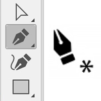
- クリックは座標点（アンカーポイント）をつなぐ
※クリックされた位置を直線でつなぐようにプログラムされています。
※アンカー（anchor）：錨(いかり), 力となるもの
- クリックを継続していくと「直線」が描かれます
- アンカーポイントに「力」が加わると「ベクトル（力の大きさ・力の方向）」の概念が適用されて曲がって「曲線」になります
パスとは
- Illustratorで描かれたものは、すべて「パス（セグメント）」から成り立っています
- 「パス」とは、２点間をつないだ線のことです
オープンパス
- 起点と終点が閉じられていない状態を「オープンパス」と呼びます
塗りが設定されている場合、自動的に直線的に結ばれた面ができます。
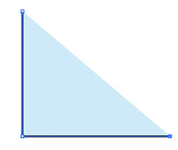
※「初期設定」は、塗「白」線「黒」です
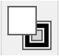
クローズドパス
- 起点が終点として閉じられた状態を「クローズドパス」と呼びます
塗りが設定されていてもいなくても、線で結ばれた一筆書きの状態ができます。
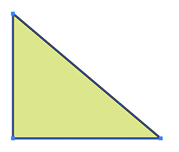
直線を描く
- ペンツールで直線の「始点」をクリックして、次の点をクリックすると直線でつながる
- クリックする度にその点と、前にクリックした点が直線で繋がるようにプログラムされています
線の設定
- 新規ドキュメントが「Web」の場合、カラーモードは「RGB」
- 新規ドキュメントが「印刷」の場合、カラーモードは「CMYK」
- 練習としては、塗「なし」線「黒」が選択できていればカラーモードにかかわらず進めましょう
- 「Web」
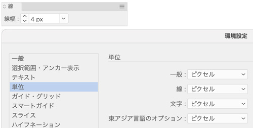
- 「印刷」
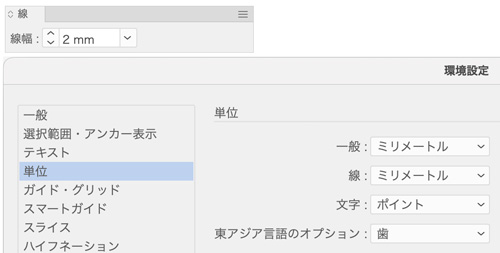
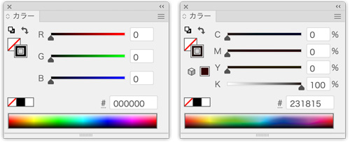
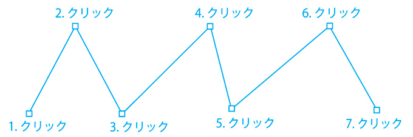
直線だけのオープンパスを描く
- 描画を終了しないでクリックを続けると、連続した直線セグメントが描画できます
- 慌ててクリックすると、方向線付きのアンカーポイントが作成されてしまいます。ゆっくりクリックして確実に描画しましょう。
描き終わる
- 描き終わるには、Ctrlキー（コマンドキー）を押しながら余白をクリックします
- 「Ctrlキー（コマンドキー）」を押すことにより、「ペンツール」は一時的に「選択ツール」に変更されます
- 「選択ツール」で余白をクリックすると「選択解除」になります
戻る
- Undo（Ctrl ＋ Z）
- ミスした時は、戻りながら（Undoは、メモリの限界まで戻ることができます）描き続けます
垂直・水平・45度線を描く
- 画面上の任意の位置にクリックします
- 次の点を少し離れた位置にクリックします
- 以上の繰り返しで、繋がった直線が描きあがります
※［Shift］キーを押しながら描くと、水平・垂直・45°に制限される。
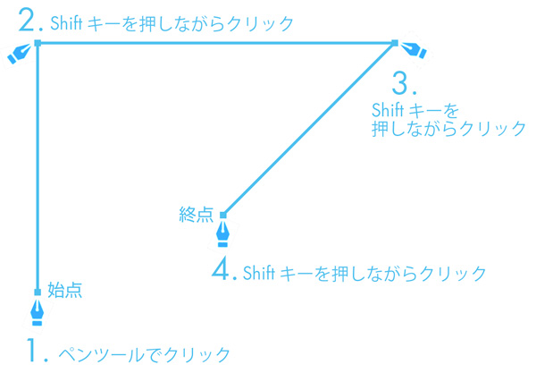
直線だけのクローズパスを描く
- 始点と終点を同意地で連結するとクローズパスになります
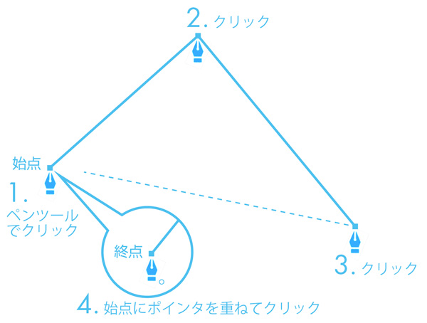
線の修正
- ダイレクト選択ツールを使う
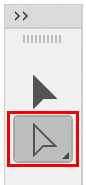
- 「アンカーポイント」の位置を移動する
- 「Ctrl（コマンド）」キーを押しながら移動します（アンカーポイントの上にマウスを乗せると「ダイレクト選択ツール」に変更されます）
- 続きを継続するときは、最後のアンカーポイントをクリックして続けます
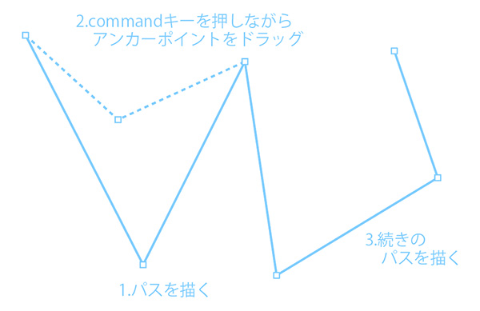